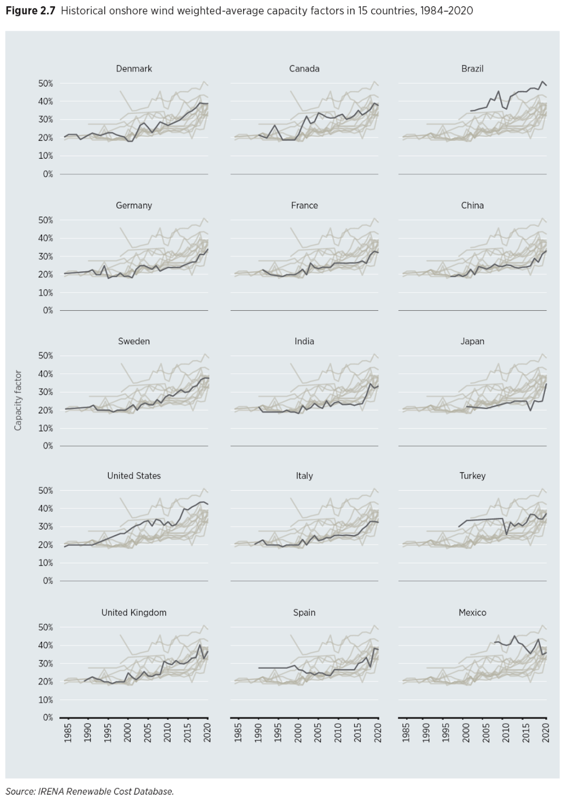
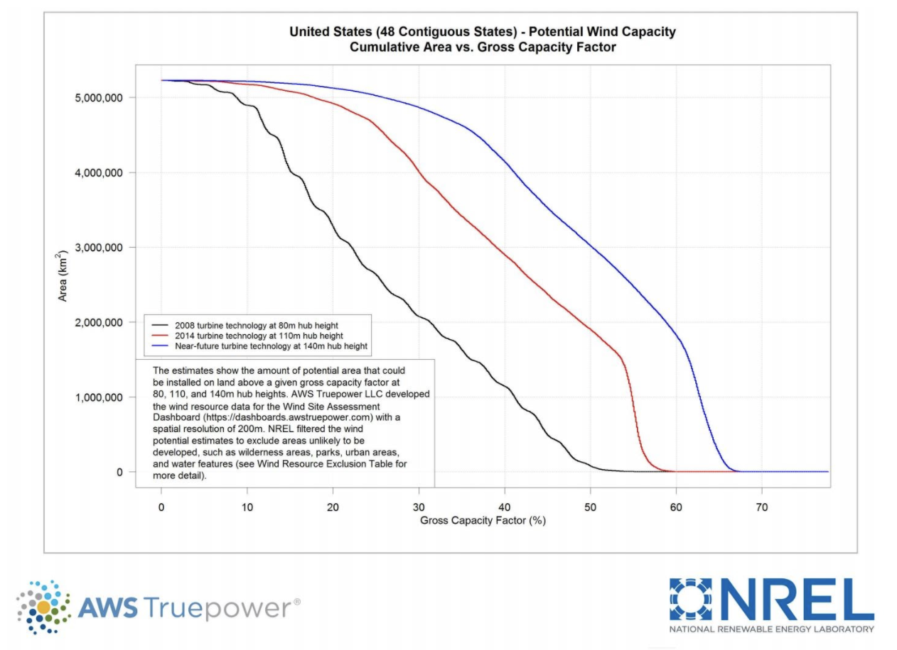
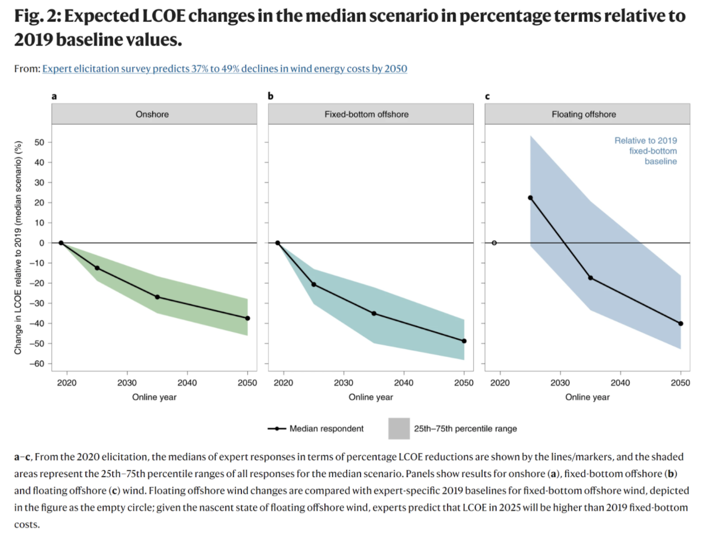

Cheaper, steadier wind power
Wind power, while decades (or centuries) old, continues to show significant cost declines and performance improvements.
The International Renewable Energy Agency (IRENA) has documented the cost of electricity from wind farms around the world. Costs have dropped from an average of 30 cents per kwh in the 1980s to an average of 4 cents per kwh in 2020.

This cost decline has been driven by:
- 1. Technological learning, or Wright’s Law, which has reduced the cost of wind turbine components as manufacturing scale has increased, in a manner similar to (but slower than) solar power’s incredible cost decline.
- 2. Ever larger wind turbines with longer blades and taller hub heights. These larger wind turbines can access better winds that are both faster and more consistent further from the ground. Larger blades also allow for turbines that can rotate and produce power when winds are slower, further increasing production. This has also led to wind turbines that produce power more steadily and less intermittently.
Wind power’s capacity factor, a percentage of an energy source’s rated-power and the actual amount it produces over a year, has roughly doubled over the same time period.
Both the cost decline and the capacity factor improvement have been faster than the majority of expert forecasts.
Looking ahead, the National Renewable Energy Laboratory has calculated that taller wind turbines, ones that reach 140 meter hub heights (the blue line in the figure below), could provide capacity factors above 60 percent across vast areas of the U.S. The same is true globally.
Innovations in the materials used for wind turbine blades and towers, in crane technologies, and in logistics and transport technologies for larger turbine components, will bring ever -cheaper and ever-steadier wind power.
Expert forecasters, the same who’ve underestimated wind power’s cost decline and performance improvements over the last decade, now believe that wind power costs will drop again by half over the coming decades.
Because wind power generally peaks at night and in winter and spring, it serves as an excellent complement to solar power, which peaks in summer. The combination of solar, wind, and cost effective intraday energy storage could provide affordable electricity for 70-90 percent of the demand on most continents, depending, in part, on how much electricity transmission nations choose to build.